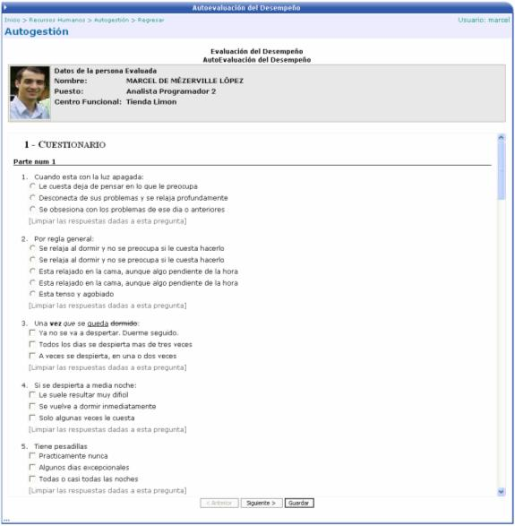

En esta sección el usuario podrá autoevaluar su desempeño laboral en la empresa, de acuerdo a varios aspectos a tomar en cuenta. Los mismos se muestran en la lista de la siguiente pantalla, y son definidos por el área de encargada de la evaluación del desempeño; al momento de crearse la evaluación el empleado tendrá que darle una calificación a cada uno de ellos y escoger entre excelente, Bueno, Regular, Deficiente, entre otros:

Para seguir con la siguiente pregunta se presiona el botón SIGUIENTE y al finalizar el cuestionario se presiona el botón de GUARDAR para almacenar las respuestas de cada una de las preguntas.
Como último paso y para concluir el proceso
de evaluación, se
debe de regresar a la pantalla de lista, seleccionar la evaluación terminada
y presionar el botón de